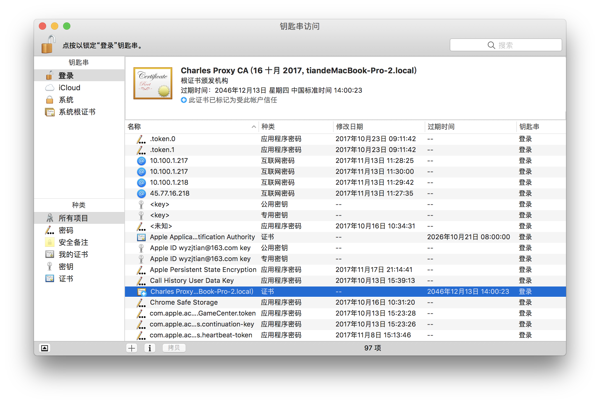
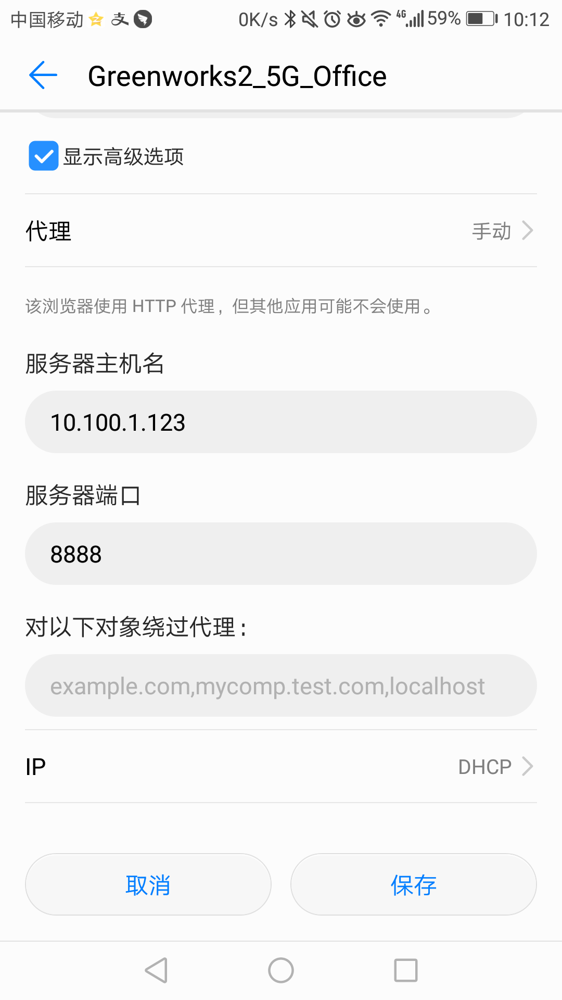

Charles抓包设置过程
iOS: http://www.jianshu.com/p/235bc6c3ca77
Charles : v4.0.1
- (百度云 ...>计算机技术>mac>Charles抓...>v4.0.1及破..) Mac : Sierra,10.12.6
1.Android 手机抓包过程.
参考Android: http://www.jianshu.com/p/3bbf596c9ca6 详情请看 参考.
测试机: Honor V8, Android: 7.0
* 1.给 Mac 安装证书,并信任.

* 2.手机跟电脑连到同一个网络，然后设置 wifi 的代理 ip 为电脑的 ip 地址,端口为 8888.

* 3.给手机安装证书.
IP配置之后用手机浏览器打开http://charlesproxy.com/getssl 下载证书
* 4.开启 Charles 的 SSL 代理功能.
在Menu选择Proxy->SSL Proxying Setting，选中Enable SSL Proxying，在Locations里面添加要使用SSL代理的网站，端口号输入443，如果需要匹配所有的HTTPS网站则输入 * 号即可。现在即可拦截Https的数据包。